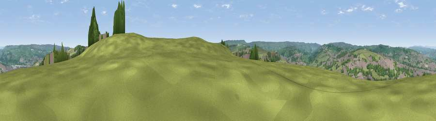

Viewpoint near Damems
#16366 in England · top 23% of its area beats it · near DamemsWhere it is
The exact computed spot (SE 05575 38575). Click the marker for map links.
The view, rendered

A 360° render of this exact spot computed from the terrain model, tree cover and land cover — summer colours, afternoon light, calibrated against photographs of famous viewpoints. Real trees, hedges and buildings will differ in detail.
The panorama
Grey silhouette: terrain skyline in each direction (720 bearings, Earth curvature and refraction included). Dashed green: skyline with trees (+15 m) and buildings (+8 m) as obstacles. Blue strip: how far the ground is visible on each bearing.
Where the view opens
Wedge length = distance to the farthest visible ground on that bearing (vegetation-aware). Rings at 10, 25 and 50 km.
What fills the view
46% grassland · 33% woodland · 21% built-up
Angular shares of the visible panorama (visual magnitude), not map area. Landscape diversity 0.46 (0–1 Shannon).
Key numbers
More beautiful places nearby
The staircase of upgrades: each row has a higher view potential than everything closer. Driving times are estimates from straight-line distance, calibrated against real road routing — check an actual route before setting out.
| Place | Direction | Drive | Score |
|---|---|---|---|
| Viewpoint near Long Lee | NE · 2 km | ~5 min | 56.4 |
| Viewpoint near Laycock | NNW · 4 km | ~9 min | 59.7 |
| Viewpoint near Riddlesden | NNE · 6 km | ~13 min | 61.8 |
| Pinfold Hill | N · 6 km | ~13 min | 62.6 |
| Viewpoint near Riddlesden | NNE · 6 km | ~13 min | 67.5 |
| Viewpoint near Thornton | SSE · 7 km | ~15 min | 68.6 |
| Viewpoint near Baildon | E · 9 km | ~17 min | 70.4 |
| Viewpoint near Stump Cross | SSE · 11 km | ~21 min | 71.5 |
53.84339, -1.91675 · source: screening · position refined by local search. Computed location — check access rights before visiting.